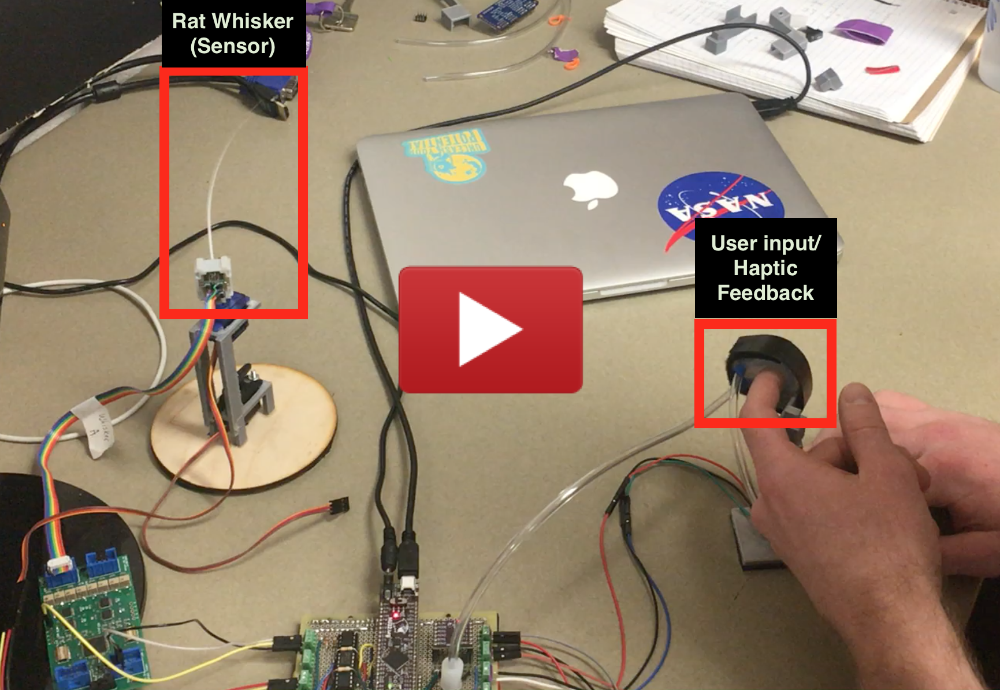

Human-Robot Haptic Interface
Overview
As part of my final project at Northwestern University, I worked with professor Mitra Hartmann in her research on rat whiskers. As the group has been studying the subject for years, they have researched and developed many interesting topics. Most notably, they have developed a mechanical rat whisker sensor which is capable of obtaining moment and force information upon contact with an object. In an effort to exploit this data, my project aims at creating a human interface for the device. Specifically, I seek to design and build a system which will give humans control over an array of rat whiskers, and accurately and intuitively relate that information back to the user in the form of haptic feedback.
The applicability of this research can scale to multiple fields. In surgical robotics, and other areas where high precision is mandatory, the use of visual feedback alone may not be enough, and haptics may prove to be the best solution. Similarly, in applications where other sensory information just isn't possible due to lack of light, or other obstructions, we may find that having the added sense of touch can make difficult operations exponentially simpler.
Prototyping
Early stage research was focused on the ability to give the user feedback which could relate back a sense of touch (both in force magnitude and position) given whisker data. In order to do this, small rings were used to apply pressure at several different locations throughout a person’s fingers. When a rat whisker comes into contact with a surface, pressurizing the correct ring will give a sense of the forces being felt in a specific location. The secondary goal was to give the user control over an array of mechanical whiskers (i.e. as the hand moves we would like the whiskers to move accordingly in real time). This allows a person to actively explore an unknown environment by using their sense of touch - potentially identifying where objects may lie, along with the force with which that object is pushing on the sensors.
The proposed idea has several key components:
- Mechanical Design
- Electrical Design
- Embedded Programming
Ring Design
In designing a ring for a person to wear, several features need to be considered. An ideal ring would have a degree of flexibility in order to fit on a variety of finger sizes, a small volume in order to allow the user to maintain full dexterity in their hand, and good functionality (i.e. the ring should have good resolution when pressurizing a finger). For this initial iteration of the project, the proposed ring design can be seen in the image below.
The ring is made by casting a silicone material using 3D printed molds. The result is a flexible piece which can be adjusted to fit on a variety of different circumferences. Notice from the image that the ring has an inner cavity. This cavity holds a balloon which changes in shape as air is pumped into it - it is this balloon which will be felt by a user. An important aspect to note is that no energy is put into expanding the material of the inner balloon, but rather only to transitioning from a state where it is flat between the user's finger and the outer ring, to one where it sits in a circular geometry squishing the finger. As such, all of the energy exerted by the pump only goes into pushing on the finger for a better effect. Adding to this is the thick outer wall of the device. This design prevents any of the expansion of the inner material from escaping outwards, and instead directs it towards the user to be felt as pressure.
As for the size of the ring, further design iterations need to be implemented. Although already small, one can imagine that as the number of rings on a person's finger grows, the overall size of each ring becomes critical, and must therefore be minimized. Overall the current design presents a first prototype with several key features taken into account. Future work into the project must continue to improve the ring until it has been better optimized.
 |
 |
Mechatronics
At the center of the system lies the electronics. Currently there are several key parts to this: The PIC32 microcontroller, an external PWM driver, an H-Bridge circuit, pressure sensor and pumps, servo motors, and smaller more standard components like op amps and potentiometers.
Aside from running the main control loop, which will be explained in the next section, the PIC32 is in charge of using I2C communication in order to speak with the external PWM driver, and the ADC in order to receive signals from sensors. The PWM driver mentioned is necessary when a large number of whiskers are being used, as the pressure pumps and servo motors both require PWM input signals. The H-bridge circuits are in charge of driving the small pumps, for which (as with more standard motor control) a pwm signal is used, in which the duty cycle determines the magnitude of the pressure being exerted.
Embedded Programming and Control
Future Work
The project is only in its early stages. In the following months I hope to continue the goal stated in the overview. The next immediate step is to create a full control loop using a micropump attached to a pressure sensor. With the use of a driver for the piezo, and a microcontroller, the design should be capable of providing haptic feedback to a user while actively controlling the magnitude of the forces sensed through a computer.
Further work will try and include the rat whiskers. A system which will allow a user to actively move the devices is the second big step in the project. The final step will be to integrate the two and, once fine tuned, bring together several of these models to, as is the goal, allow a person complete haptic feedback.